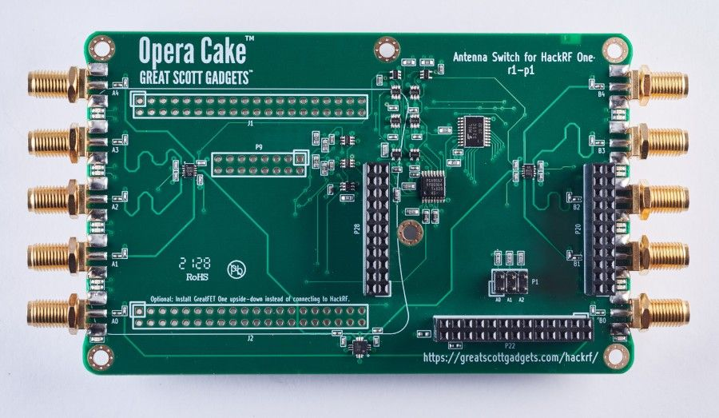

Opera Cake¶
Opera Cake is an antenna switching add-on board for HackRF One. Consisting of two 1x4 switches, Opera Cake also has a cross-over switch that permits operation as a 1x8 switch. Up to eight Opera Cakes may be stacked onto a single HackRF One provided that each Opera Cake is configured with a different board address.
Opera Cake is configured with the hackrf_operacake command-line tool.
Using Opera Cake¶
Banks¶
Opera Cake’s ports are grouped in two banks (or “sides”), one on each end of the board. Bank A consists of ports A0 through A4 while bank B consists of ports B0 through B4.
Ports¶
Opera Cake has two primary ports, A0 and B0, each of which can be switched to any of eight secondary ports, A1-A4 and B1-B4. Each primary port is always connected to one secondary port. By default, A0 is connected to A1, and B0 is connected to B1. It is not possible to connect both primary ports to secondary ports in the same bank at the same time.
Port connections may be configured manually. For example, to connect A0 to A2 and B0 to B3:
hackrf_operacake -a A2 -b B3
To connect A0 to B2 and B0 to A4:
hackrf_operacake -a B2 -b A4
If only one primary port is configured, the other primary port will be connected to the first secondary port on the opposite side. For example, after the next two commands B0 will be connected to A1:
hackrf_operacake -a A2 -b B3
hackrf_operacake -a B2
LEDs¶
Port selections are indicated by LEDs next to each port’s connector. Port A0 and the secondary port connected to A0 are indicated with a green LED. Port B0 and the secondary port connected to B0 are indicated with a yellow LED.
Board Address¶
Each Opera Cake has a numeric address set by optional jumpers installed on header P1. The default address (without jumpers) is 0. The --list or -l option can be used to list the address(es) of one or more Opera Cakes installed on a HackRF One:
hackrf_operacake -l
The address may be set to any number from 0 to 7 by installing jumpers across the A0, A1, and/or A2 pins of header P1.
Address |
A2 Jumper |
A1 Jumper |
A0 Jumper |
|---|---|---|---|
0 |
No |
No |
No |
1 |
No |
No |
Yes |
2 |
No |
Yes |
No |
3 |
No |
Yes |
Yes |
4 |
Yes |
No |
No |
5 |
Yes |
No |
Yes |
6 |
Yes |
Yes |
No |
7 |
Yes |
Yes |
Yes |
When configuring an Opera Cake, the address may be specified with the --address or -o option:
hackrf_operacake -o 1 -a A1 -b B2
If the address is unspecified, 0 is assumed. It is only necessary to specify the address if the address has been changed with the addition of jumpers, typically required only if multiple Opera Cakes are stacked onto a single HackRF One.
Modes of Operation¶
Opera Cake supports three modes of operation: manual, frequency, and time. The operating mode can be set with the --mode or -m option, and the active operating mode is displayed with the --list or -l option.
Manual Mode¶
The default mode of operation is manual. In manual mode, fixed port connections are configured with the -a and -b options as in the port configuration examples above. If the operating mode has been changed, it can be changed back to manual mode with:
hackrf_operacake -m manual
Frequency Mode¶
In frequency mode, the A0 port connection switches automatically whenever the HackRF is tuned to a different frequency. This is useful when antennas for different frequency bands are connected to various ports.
The bands are specified in priority order. The final band specified will be used for frequencies not covered by the other bands specified.
To assign frequency bands to ports you must use the -f <port:min:max> option for each band, with the minimum and maximum frequencies specified in MHz. For example, to use port A1 for 100 MHz to 600 MHz, A3 for 600 MHz to 1200 MHz, and B2 for 0 MHz to 4 GHz:
hackrf_operacake -m frequency -f A1:100:600 -f A3:600:1200 -f B2:0:4000
If tuning to precisely 600 MHz, A1 will be used as it is listed first. Tuning to any frequency over 4 GHz will use B2 as it is the last listed and therefore the default port.
Only the A0 port connection is specified in frequency mode. Whenever the A0 connection is switched, the B0 connection is also switched to the secondary port mirroring A0’s secondary port. For example, when A0 switches to B2, B0 is switched to A2.
Once configured, an Opera Cake will remain in frequency mode until the mode is reconfigured or until the HackRF One is reset. You can pre-configure the Opera Cake in frequency mode, and the automatic switching will continue to work while using other software.
Although multiple Opera Cakes on a single HackRF One may be set to frequency mode at the same time, they share a single switching plan. This can be useful, for example, for a filter bank consisting of eight filters.
Time Mode¶
In time mode, the A0 port connection switches automatically over time, counted in units of the sample period. This is useful for experimentation with pseudo-doppler direction finding.
To cycle through four ports, one port every 1000 samples:
hackrf_operacake -m time -t A1:1000 -t A2:1000 -t A3:1000 -t A4:1000
When the duration on multiple ports is the same, the -w option can be used to set the default dwell time:
hackrf_operacake --mode time -w 1000 -t A1 -t A2 -t A3 -t A4
Only the A0 port connection is specified in time mode. Whenever the A0 connection is switched, the B0 connection is switched to the secondary port mirroring A0’s secondary port. For example, when A0 switches to B2, B0 is switched to A2.
Once configured, an Opera Cake will remain in time mode until the mode is reconfigured or until the HackRF One is reset. You can pre-configure the Opera Cake in time mode, and the automatic switching will continue to work while using other software.
Although multiple Opera Cakes on a single HackRF One may be set to time mode at the same time, they share a single switching plan.